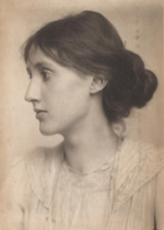

Vanessa Bellová: Leonard Woolf
Které irské a velšské spisovatele znáš?
Co víš o Irsku a Walesu?
|
VELKÁ BRITÁNIE
Začátek 20. století byl ve znamení národní emancipace Irů. Vznikla politická strana Sinn Fein, parlament schválil irskou samosprávu a po dublinském povstání (1916) a anglo-irské válce (1919-1921) získalo Irsko nezávislost. Vzápětí zde ale vypukla občanská válka, protože sinnfeisté nesouhlasili s rozdělením ostrova na samostatnou a britskou část (Severní Irsko). Ve stopách Irů se snažili jít i Velšané, ale bez úspěchu. Obrození irské a velšské kultury dalo vyrůst řadě kvalitních spisovatelů. Zajímavá literární díla vznikala i v britských koloniích, například v Indii.
M. C. Escher: Den a noc
|
Historie
Na počátku 20. stol. byla Velká Británie největší koloniální velmocí světa. Patřila jí Kanada, Austrálie, Nový Zéland, velká část Afriky, Indie a další území v Asii. Během 1. sv. války bojovala na straně Dohody, později se účastnila intervence proti sovětskému Rusku. Roku 1921 si vybojovali nezávislost Irové (severní část ostrova ale zůstala součástí Velké Británie). V roce 1931 se Britské imperium změnilo na Britské společenství národů a Westminsterský statut zaručil samostatnost Kanadě, Australskému svazu, Jihoafrické unii a Novému Zélandu. Indie s Pákistánem získaly samostatnost až roku 1947.
|
G. B. Shaw (1856-1950)
Irský dramatik George Bernard Shaw [šó] byl členem Fabiánské společnosti, která sdružovala socialisticky orientované intelektuály odmítající násilí a připravující svržení kapitalismu demokratickou cestou. Je autorem mnoha satirických komedií, ve kterých využil svůj smysl pro humor a ironii. Vlastní tvorbu rozdělil do několika okruhů: hry neutěšené – Záletník, Živnost paní Warrenové, hry utěšené – Čokoládový hrdina, Candida, Člověk nikdy neví a hry pro puritány – Caesar a Kleopatra. Ostatní dramata jako Pygmalion, Zpět k Methusalemovi nebo Svatá Jana součástí těchto cyklů nejsou. Roku 1925 obdržel Nobelovu cenu za literaturu.
|
G. B. Shaw: Pygmalion
Komedie Pygmalion vypráví příběh chudé a zanedbané pouliční květinářky Lízy Doolittlové, které se ujme bohatý profesor fonetiky Henry Higgins. Samolibě se vsadí se svým přítelem, že prostořekou Lízu naučí spisovné mluvě, udělá z ní dámu a uvede ji do vyšší společnosti. Sázku sice vyhraje, ale Líza nemá žádné finanční prostředky a k prodávání květin se vrátit nemůže. Útočiště ve vlastním domě jí nabídne profesorova matka. Když se starému mládenci Higginsovi začne po Líze stýskat, odmítne jeho nabídku vrátit se zpět a dává přednost chudému mladíkovi, který se do ní zamiloval.
|

Které postavy v ukázce vystupují? Co se o nich dozvídáme?
Na čem je založena komika dialogů?
Srovnej děj Shawova Pygmaliona a muzikálu My Fair Lady.
Kdo byl Pygmalion?
|
James Joyce (1882-1941)
Irský spisovatel James Joyce [džejmz džojs] bývá považován za největšího spisovatele 20. století. Žil v Paříži, Terstu a Curychu. Ovládal více než deset jazyků, trpěl vážnou oční chorobou a celý život strávil v chudobě. Umělecky měl blízko k imagistům. Je autorem sbírky povídek Dubliňané a experimentálních próz Portrét umělce v jinošských letech, Odysseus nebo Plačky nad Finneganem.

Joyceova socha v Dublinu
|
James Joyce: Odysseus
Experimentální román Odysseus se odehrává v irském Dublinu. Během jedné noci ze 16. na 17.6.1904 prožívá hlavní hrdina jakousi paralelu s Odysseovým desetiletým putováním. Novinář Leopold Bloom (Odysseus) obstarává běžné pochůzky. Ve vykřičeném domě ho potkává intelektuál Štěpán Dedalus (Telemachos), kterého se Bloom ujme jako jeho „otec“ a nabídne mu nocleh. Když Štěpán odmítne, vrací se Bloom ke své ženě Molly (Penelopé), jejíž proud myšlenek román uzavírá.
Odysseus vyšel v Paříži roku 1922. Jako pornografie byl až do roku 1933 zakázán ve všech anglicky mluvících zemích. Kniha je novátorská především svou mnohovrstevností – míšením různých žánrů a stylů, důmyslnou prací s jazykem, složitým využíváním symbolů, cizojazyčnými vložkami nebo originálními odkazy k Homérově eposu.
|

Brian O’Toole: Joyce
Srovnej jednotlivé ukázky z Odyssea.
Která z nich tě zaujala nejvíce? Čím?
Zopakuj si, co víš o Odysseovi a ohlasech jeho putování v literatuře.
|
David Herbert Lawrence
(1885-1930)
David Herbert Lawrence [dejvid hérbrt lórens] vyrůstal v puritánské rodině. Procestoval celý svět (Cejlon, Austrálie, Mexiko).
Napsal romány Synové a milenci, Ženy milující nebo
Milenec lady Chatterleyové.
|
D. H. Lawrence: Milenec lady Chatterleyové
Kontroverzní román Milenec lady Chatterleyové vypráví příběh nešťastné ženy, která nemůže najít ukojení své touhy u manžela, a proto si najde milence. Zámožný manžel Connie Chatterleyové byl raněn a ochrnula mu dolní polovina těla. Mladá žena si přestává s manželem rozumět a uspokojení svých sexuálních i citových potřeb nakonec najde u hajného Mellorse. Čeká s ním dítě a opouští manžela.
Román byl v Británii zakázán jako pornografie až do roku 1960. Zajímavý je autorův pokus o zachycení ženského pohledu na svět a intimní vztahy.
|

Charakterizuj Connie a Clifforda.
Souhlasíš s jejich názory? Proč?
Co je pornografie?
Jaký je rozdíl mezi pornografií a uměním?
Může spisovatel pravdivě vyjádřit prožívání žen? Neměly by o ženách psát pouze ženy?
|
Virginia Woolfová (1882-1941)
Virginia Woolfová [verdžinja vulfová] byla duší umělecké skupiny Bloomsbury Group, jejíž členové neuznávali tradiční viktoriánské hodnoty, např. nerovnoprávné postavení žen v rodině i společnosti. Její novátorské prózy jsou vystavěny na asociacích, častých odbočkách a komentářích nebo volném proudu myšlenek. Je autorkou povídky Skvrna na zdi či románů Paní Dallowayová, K majáku, Vlny a Orlando. Po celý život trpěla depresemi a nakonec spáchala sebevraždu.
Co si myslíš o autorčině výroku „Lépe je žít jako neznámý a zanechat po sobě oblouk, zahradnickou kůlnu, zeď, kde zrají broskve, než zazářit jako meteor a nezanechat po sobě popel.“?
|
Virginia Woolfová: Orlando
V experimentálním románu Orlando se snaží vypravěč v podobě životopisce zachytit osudy bohatého šlechtice Orlanda. Orlando žil na dvoře anglické královny Alžběty I. Ve 30 letech ale přestal stárnout a navíc se proměnil v ženu, která se dožila 20. století. Orlando se setkává s významnými historickými osobnostmi a kvůli svému přerodu se musí vypořádat s řadou absurdních situací.
Autorka konfrontuje pocity ženy a muže, zpochybňuje jejich tradiční role a neustále komentuje samotný proces psaní. Svůj román doplnila jmenným rejstříkem, který obsahují pouze díla naučná.
|

Chtěl/a bys být mužem nebo ženou? Proč?
Jak se vyvíjelo společenské postavení mužů a žen?
Mají dnes jednodušší život ženy nebo muži?
Kdy vládla královna Alžběta I.?
|
Dylan Thomas (1914-1953)
Velšský básník Dylan Thomas [dilen tomes] pracoval v britském rozhlase. Napsal básnické sbírky 18 básní, Dvacet pět básní, Mapa lásky, Smrti a vstupy nebo Sebrané básně. Je také autorem prózy Portrét umělce jako štěněte nebo nedokončeného humoristického románu Dobrodružství obchodníka s lidskou kůží. Od mládí měl problémy s alkoholismem a během přednáškového turné po Spojených státech amerických své závislosti podlehl.
|
Thomasova poezie
Thomasovy verše odsoudili mnozí kritikové jako nesrozumitelné. Autor experimentuje s novotvary, metrem i zvukomalbou a jeho básnické obrazy jsou velmi složité.
„Mám rád věci, které se píší těžko a jimž je těžko porozumět. Rád si protiřečím v obrazech, říkám dvě věci najednou a v jednom slově, čtyři ve dvou a jednu v šesti…“ (Dylan Thomas)
|

Pokus se vyložit některou z Thomasových básní.
|
W. B. Yeats (1865-1939)
Irský básník William Butler Yeats [viljem batlr jejts] studoval výtvarné umění. Neúspěšně se ucházel o ruku Maud Gonneové i její adoptivní dceru. Byl čelným představitelem obrození irské národní kultury a po osamostatnění Irska se stal senátorem. Je autorem básnických sbírek Oisínovo bloudění nebo Věž, dramat Hraběnka Kathleen nebo Země touhy a povídek Tajemná růže. Sebral Pohádky a pověsti irských rolníků a Irské pohádky a pověsti. Roku 1923 obdržel Nobelovu cenu za literaturu.
|
Yeatsovy básně
Yeats čerpal inspiraci v keltské mytologii a zajímal se o hermetické nauky (alchymie, astrologie...). Jeho poezie má blízko k symbolismu.
|

Pokus se o Yeatsovi zjistit více.
|
|
|
Další autoři a jejich díla
John Galsworthy: Sága rodu Forsytů, Moderní komedie
Agata Christie: Deset malých černoušků
Aldous Huxley: Konec civilizace
J. R. R. Tolkien: Hobit, Pán prstenů
Gilbert Keith Chesterton: Napoleon z Notting Hillu, Klub podivných živností, Tajemství otce Browna
|
|
Internetové stránky
Shaw
Fantys: Odysseus, článek
Joyce
Joyce
Joyce
Joyce
Joyce
Lawrence a Joyce
Lawrence
Lawrence
Lawrence, muzeum
Thomas
Thomas
Thomas
Yeats
Yeats
Yeats
Bloomsbury Group
|
Doporučená četba
Divadelní moudrost Bernarda Shawa, Mladá fronta, Praha 1979 (Živnost paní Warrenové, Pygmalión, Svatá Jana)
Hilský, M., Nagy, L.: Od slavíka k papouškovi, Proměny britské prózy, Host, Brno 2002
Hilský, Martin: Modernisté, Torst, Praha 1995 (Eliot, Joyce, Woolfová, Lawrence)
Chesterton, Gilbert Keith: Příběhy otce Browna, Praha 1960
Joyce, James: Odysseus, přel. A.Skoumal, Odeon, Praha 1976
Lawrence, David Herbert: Milenec lady Chatterleyové, přel. F.Vrba, Odeon, Praha 1987
Shaw, George Bernard: Hry (2 svazky), SNKLHU, Praha 1956
Thomas, Dylan: Svlékání tmy, přel. P.Šrut, ČSS, Praha 1988
Vančura, Z.: Umění G. B. Shawa, Praha 1958
Woolfová, Virginia: Jak to vidí současník, přel. I.Jílovcová-Kalivodová, One Woman Press, Praha 2000
Woolfová, V.: Orlando, přel. K.Hilská, Argo, Praha 1994
Woolfová, V.: Smyčcový kvartet, přel. Z.Mayerová, Odeon, Praha 1982
Woolfová, V.: Vlastní pokoj, přel. M.Pokorný, Marie Chřibková, Praha 1998
Yeats, William Butler: Slova snad pro hudbu, přel. J.Valja , SNKLU, Praha 1961
|
Vypracuj písemný referát o některé z uvedených knih.
Filmy
My Fair Lady, režie G.Cukor (Pygmalion)
Odysseus, režie J.Strick
Exkurze
Dublin, Irsko
|
|